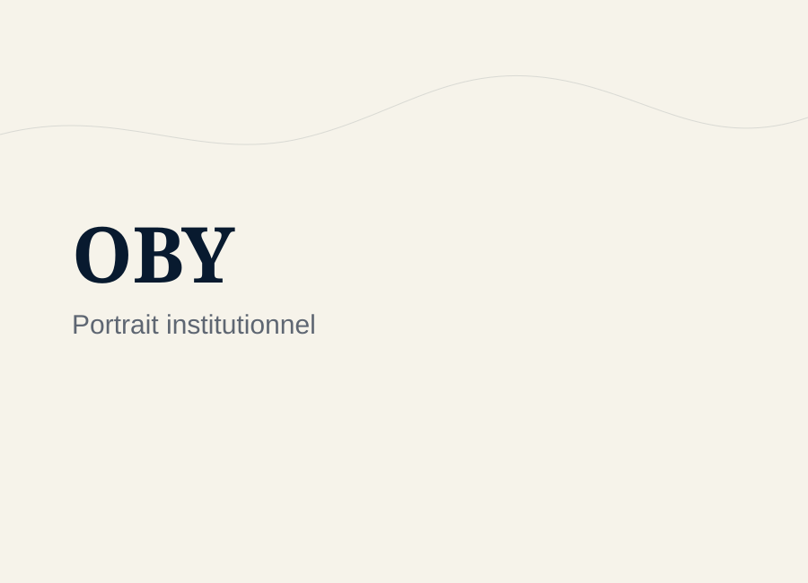

Cadres du droit
Droit public, droit international, droit de la mer, contrats, arbitrage, médiation et OHADA donnent au parcours une armature juridique rigoureuse.

Relier le droit, la géographie du littoral, les institutions, la médiation, l'innovation et les transitions maritimes entre Afrique, Europe, Méditerranée et Golfe de Guinée.

OUAGA Bokoua Yao construit une trajectoire juridique, territoriale, institutionnelle et entrepreneuriale. Elle relie le droit public, le droit international, le droit de la mer, la gouvernance maritime, la médiation, la géographie du littoral, l'environnement marin, le droit des affaires, l'innovation et la prospective.
Le parcours ne se résume pas à une addition de formations ou d'expériences. Il s'organise autour d'une question centrale : comment comprendre les espaces maritimes et littoraux à partir des normes, des institutions, des territoires, des vulnérabilités, des conflits d'usage et des besoins concrets des acteurs publics, académiques ou économiques.
Droit public, droit international, droit de la mer, contrats, arbitrage, médiation et OHADA donnent au parcours une armature juridique rigoureuse.
Le Master Géographie, Aménagement, Environnement et Développement a renforcé la lecture territoriale des espaces côtiers, de leurs vulnérabilités et de leurs trajectoires d'adaptation.
Les expériences académiques et institutionnelles éclairent l'action de l'État en mer, la sécurité maritime, la coordination administrative et les responsabilités publiques.
L'entrepreneuriat académique, la propriété intellectuelle et la prospective prolongent la recherche vers des méthodes, des solutions et des projets situés.
Le parcours se lit comme une progression entre cadres juridiques, géographie du littoral, médiation, innovation et ancrages géographiques. Cette lecture reste volontairement synthétique et ne remplace pas les pages de travaux ou de participations.
Droit public, droit international, contrats, institutions et responsabilités publiques.
Aménagement, développement, vulnérabilités côtières, usages littoraux et transitions environnementales.
Modes amiables, conflits d'usage, impartialité, dialogue et règlement des différends.
Propriété intellectuelle, solutions adaptées, prospective et projets à impact situés.
Circulations institutionnelles, académiques et territoriales entre espaces africains, européens et méditerranéens.
La trajectoire ne juxtapose pas des domaines : elle organise des passages entre normes, institutions, territoires et usages. Le droit de la mer reste un axe majeur, tandis que la géographie, la médiation, le droit des affaires, l'innovation et la prospective élargissent la lecture des transitions maritimes et littorales.
La formation initiale en droit public s'est prolongée par des travaux sur la préservation de la zone côtière ivoirienne, puis par un axe structurant consacré au droit international de la mer et au Golfe de Guinée.
Le parcours en géographie, aménagement, environnement et développement apporte une lecture des territoires littoraux, des vulnérabilités, des conflits d'usage, des pressions côtières et des politiques d'adaptation.
Le parcours intègre les contrats internationaux, l'arbitrage, la négociation, le transport maritime, la logistique internationale et les dynamiques du commerce international.
L'ancrage en médiation nourrit une approche attentive au dialogue, aux modes amiables, à la justice participative, aux conflits d'usage et aux situations institutionnelles complexes.
L'ouverture vers l'innovation associe propriété intellectuelle, brevets, valorisation, sécurisation des espaces maritimes, solutions techniques adaptées au terrain et futurs possibles des territoires littoraux.
Certaines responsabilités s'apprennent avant d'être visibles. Dans ce parcours, le service discret, la discipline de travail et la préparation progressive comptent autant que les lieux traversés.
Avant d'arriver dans certains lieux, il faut accepter de servir dans l'ombre : apprendre à écouter, organiser, préparer, soutenir et tenir une exigence de travail sans chercher à occuper la lumière.
Au sein de l'AEJCI — Association des Étudiants Juristes de Côte d'Ivoire —, les responsabilités exercées comme secrétaire général adjoint du Bureau national puis secrétaire général, ainsi que le rôle de greffier lors de concours de procès simulé, ont nourri une culture de l'organisation, de la rigueur, du service collectif, de la responsabilité et de la pratique juridique.
Le parcours se construit autour de repères simples : humilité, préparation, travail, vision, précision des mots et volonté de relier les savoirs aux situations concrètes.
Ces repères situent des responsabilités, adhésions, réseaux suivis et cadres d'engagement sans les transformer en partenariats institutionnels du site OBY.
Président-fondateur de l'ONG Protégeons Notre Littoral depuis août 2016 et président-fondateur de l'APELCI depuis juin 2013 : deux cadres associatifs distincts qui éclairent l'engagement littoral, environnemental, logistique et organisationnel.
Alumni du programme de stage du Tribunal international du droit de la mer depuis juin 2019, membre de l'AJAIF depuis mai 2019, membre de l'AAPDI depuis décembre 2018 et ancien membre AFNU-Aix d'avril 2018 à décembre 2020.
Responsabilités au sein de l'AEJCI comme secrétaire général adjoint puis secrétaire général du Bureau exécutif national, rôle de greffier lors de concours de procès simulé, délégué général des étudiants de la Faculté de Droit de l'UFHB et membre du Conseil National des Délégués de l'UFHB.
Le statut national d'étudiant-entrepreneur, les activités Pépite Provence, le rôle d'ambassadeur Pépite et les événements associés nourrissent une réflexion sur la valorisation, l'impact, l'innovation et l'économie bleue, dans une logique de cohérence académique.
Les engagements liés au littoral, à la participation COY/COP et aux espaces de dialogue sur l'environnement renforcent l'attention portée aux vulnérabilités côtières, aux transitions et à la responsabilité institutionnelle.
SFdP et AFIM relèvent de réseaux confirmés ; Ocean Day est valorisé comme participation confirmée à une activité organisée en prélude à la Journée mondiale des océans ; CNFG, CPAT et AFPCNT restent en cours ou à vérifier ; GoGMI, Institut OCÉAN et geotamtam sont traités comme réseaux suivis ou espaces de veille.
Quelques expériences académiques, institutionnelles, juridiques, entrepreneuriales et de recherche ont progressivement structuré une approche interdisciplinaire du droit, de la mer, du littoral, de la médiation, de la gouvernance et de l'innovation.
Le passage au Tribunal International du Droit de la Mer a donné un contact direct avec une institution spécialisée du règlement des différends maritimes. Il s'inscrit dans une ouverture plus large aux cadres internationaux, nourrie aussi par l'Académie de droit international.
Cet axe porte sur l'application du droit international de la mer dans le Golfe de Guinée, avec une attention aux enjeux de sécurisation des espaces et activités maritimes, de souveraineté, de coopération régionale et d'effectivité institutionnelle.
Les expériences menées auprès d'institutions liées à l'action de l'État en mer, aux affaires maritimes et au contentieux portuaire ont nourri une compréhension des rapports entre normes, administrations, activités maritimes, coordination institutionnelle et gouvernance des espaces maritimes.
Le stage réalisé dans le cadre du Master 2 Droit international des affaires a constitué une expérience d'observation et de pratique juridique, utile pour relier contrats, contentieux, arbitrage, médiation et réalités professionnelles du droit.
Le stage au CIAPOL, les recherches conduites autour du littoral ivoirien et les travaux associés aux politiques environnementales ont renforcé une lecture juridique et institutionnelle des vulnérabilités côtières, de la pollution marine et de la protection du milieu littoral.
Les travaux du parcours COAST ont consolidé une approche du littoral associant droit, géographie, aménagement, environnement, diagnostic territorial, gestion intégrée des zones côtières, pressions urbaines et récréatives, vulnérabilités côtières et prospective d'adaptation.
Stage de Master 2 financé par l'initiative d'excellence AMIDEX, au sein du projet de recherche PROTEUS, effectué au laboratoire TELEMME (Aix-Marseille Université). Un stage de recherche centré sur les dynamiques littorales et maritimes en Méditerranée, combinant droit, gouvernance et enjeux territoriaux.
Les activités Pépite Provence, le statut d'étudiant-entrepreneur, les stands, forums, présentations et rencontres entrepreneuriales ont permis d'articuler innovation, propriété intellectuelle, structuration de projet et impact, dans une logique de valorisation académique.
Le parcours en médiation et en modes amiables de règlement des différends complète l'approche juridique par une attention portée à la négociation, à l'impartialité du tiers, à la justice participative, aux conflits d'usage et aux mécanismes de règlement des différends dans les espaces économiques et institutionnels.
Les formations en innovation, propriété intellectuelle, droit international des affaires et logistique internationale ouvrent le parcours vers les contrats internationaux, l'arbitrage, le commerce, le transport maritime, la valorisation des projets et les solutions adaptées aux besoins de terrain.
Le parcours articule le Golfe de Guinée, la Côte d'Ivoire, les institutions européennes et les espaces méditerranéens comme terrains de réflexion sur les coopérations, les circulations et la gouvernance.
Les thèmes centraux restent la mer, le littoral, la protection des milieux, la sécurité maritime, les institutions, les contrats, la médiation et les transformations liées à l'innovation.
Ces formulations courtes donnent un cadre de présentation utilisable pour situer le profil OBY dans des échanges académiques, institutionnels ou intellectuels qualifiés.
OUAGA Bokoua Yao développe un parcours interdisciplinaire à l'interface du droit de la mer, de la géographie littorale, de la gouvernance maritime, de la médiation et de l'innovation. Son travail relie Afrique, Europe, Méditerranée et Golfe de Guinée pour éclairer des enjeux maritimes, littoraux, institutionnels et territoriaux.
OUAGA Bokoua Yao construit une trajectoire académique, institutionnelle et entrepreneuriale qui articule droit public, droit international, droit de la mer, géographie littorale, environnement, médiation, innovation et prospective. Ses travaux et participations portent sur la gouvernance maritime, la sécurité des espaces maritimes, les vulnérabilités littorales, les modes amiables de règlement des différends et les dynamiques Afrique–Europe–Méditerranée–Golfe de Guinée. Cette approche vise à produire des lectures claires, situées et mobilisables pour des échanges académiques, institutionnels ou intellectuels qualifiés.
Une collaboration peut être envisagée lorsqu'un sujet appelle une lecture croisée entre normes, institutions, territoires, usages et acteurs. OBY permet d'identifier un cadre d'échange ; le format précis peut ensuite être discuté selon le contexte, l'objectif et le niveau de confidentialité requis.
Le profil OBY ouvre un espace de contribution qualifiée : éclairer des enjeux maritimes, littoraux, institutionnels ou entrepreneuriaux avec une méthode juridique, territoriale et stratégique.
Conférences, interventions, formations courtes, ateliers ou dialogues institutionnels autour du droit de la mer, de la gouvernance maritime, du littoral, de la médiation et de l'innovation.
Notes stratégiques, analyses juridiques, synthèses documentaires, lectures territoriales et appuis méthodologiques pour clarifier un sujet, un contexte ou une problématique.
Appui à des projets académiques, institutionnels ou entrepreneuriaux liés aux espaces maritimes, aux territoires côtiers, à l'économie bleue, à la médiation ou à la prospective.
La méthode repose sur une approche interdisciplinaire : analyser les textes et les institutions, observer les territoires, comprendre les usages, identifier les tensions, puis relier le droit, la géographie, la gouvernance, les contrats internationaux, la médiation, la propriété intellectuelle, la logistique et l'innovation dans une perspective de clarté, de rigueur et d'impact.
Partir des textes, institutions, responsabilités et cadres juridiques pour clarifier les enjeux.
Mettre en dialogue les disciplines, les terrains, les acteurs et les usages plutôt que les traiter séparément.
Transformer les observations en axes de recherche, notes, fiches, contributions ou échanges qualifiés.
Après le profil, le parcours peut se prolonger vers les axes, les productions, les participations documentées ou une demande qualifiée.
Lire les orientations, compétences mobilisables et terrains de réflexion.
TravauxIdentifier les travaux, notes et ressources présentés avec prudence.
ParticipationsParcourir les événements, sources officielles et espaces de dialogue.
ContactFormuler un échange clair avec sujet, contexte, format et objectif.